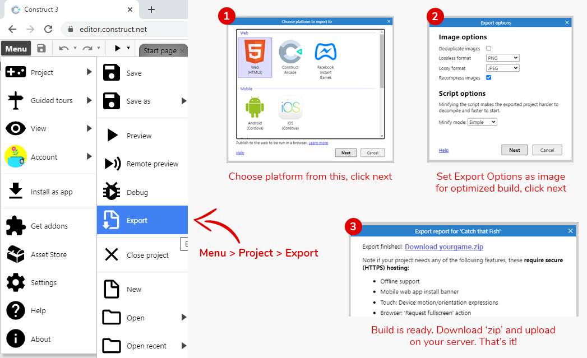

Created: 4-Oct-2022
By: Mazap Labs
Email: support@mazaplabs.com
Thank you for purchasing our game. If you have any questions that are beyond the scope of this help file, please feel free to email via our user page contact form here. Thanks so much!
When you download the game you get following structure.
Above are 3 files. First is documentation.zip (Help file for the game). Second is published.zip which you can upload directly on your server and can access from the server link. Game will be played directly without any further configuration using this file.
Third File is .c3p and it is main construct 3 game file which is used to edit game using construct 3 editor. You can edit files in construct 3 using following link
Now you have to open construct 3 file using construct3 editor. Follow steps as there in the image below-
There are 2 ways of changing music.
From Published File - in this you don't require to open file in construct 3 and thus can change offline.
From Construct File - in this you will require to open file in construct 3 and thus can change online only.
We are showing to change background music of the game. You can change other sounds in similar way.
Once all changes are done in construct3, you will need to export the files. Refer to image below to follow the steps-
Please Note - If you have worked in published folder only, you need not to this step of exporting because published folder has all the exported files which you can upload directly on the server.
If you still find any difficulty in customizing the game, do reach us at support@mazaplabs.com
If you also have any customization request in existing or a new game concept, feel free to get in touch with our team on our email.
Mazap Labs Team